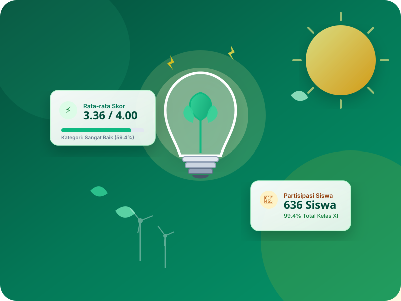

Kebiasaan Kecil, Listrik Terjaga, Bumi Lebih Baik.
Listrik sering terasa tak terbatas karena tinggal menekan saklar. Padahal, perangkat yang dibiarkan menyala di sekolah menghabiskan daya secara konstan. Mari mulai dari ruang kelas: matikan yang tak terpakai, cabut colokan charger, dan manfaatkan terangnya cahaya matahari.

3 Kebiasaan Kunci di Lingkungan Sekolah
Tiga langkah mudah yang berdampak besar dalam menekan tagihan listrik dan mengurangi emisi karbon sekolah.
Penerangan Cerdas
Penerangan menyumbang hingga 26% dari total konsumsi listrik sekolah. Buka tirai kelas di pagi hari dan matikan lampu bila ruangan kosong atau saat sinar matahari mencukupi.
Perangkat & Lab Komputer
Komputer lab, monitor eksternal, dan proyektor yang dibiarkan menyala saat jeda istirahat membuang puluhan kWh setiap minggunya. Selalu aktifkan mode hemat daya dan matikan setelah jam pelajaran.
Cabut Colokan & Steker
Berdasarkan hasil angket, 92% siswa sudah rajin mencabut colokan (P06: 3.45). Pertahankan kebiasaan ini agar adaptor charger tidak terus menyedot arus semu (phantom power).
Data Kuesioner Sekolah Sudah Dibuka!
Kini kamu bisa melihat visualisasi data interaktif dari angket perilaku hemat energi 636 siswa: tinjau grafik 10 butir pernyataan, temukan posisi ranking jurusanmu, dan cari skor rombelmu dengan fitur pencarian real-time!
Dashboard Analitik Fase 2
Dilengkapi Chart Distribusi Kategori, Histogram Sebaran Skor, dan Tabel 18 Rombel Interaktif.
100% Interaktif & Responsif